<!DOCTYPE lake>
<h2 data-lake-id="zpgb5" data-lake-index-type="2" id="zpgb5"><span data-lake-id="u11ee4359" id="u11ee4359">vscode安装</span></h2><ul list="ucf662264"><li data-lake-id="u0fc8e156" fid="u0944ed2a" id="u0fc8e156"><span data-lake-id="uc4b5427d" id="uc4b5427d">直接访问官网: </span><a data-lake-id="u9c5b3b9c" href="https://code.visualstudio.com/" id="u9c5b3b9c" rel="noopener noreferrer" target="_blank"><span data-lake-id="u91cf6b06" id="u91cf6b06">https://code.visualstudio.com/</span></a></li></ul><h2 data-lake-id="cK0g2" data-lake-index-type="2" id="cK0g2"><span data-lake-id="u1d55c3df" id="u1d55c3df">安装插件</span></h2><h3 data-lake-id="ffyGR" data-lake-index-type="2" id="ffyGR"><span data-lake-id="u0ce45bb9" id="u0ce45bb9"> 安装Embedded IDE</span></h3><p data-lake-id="u2cce0635" id="u2cce0635">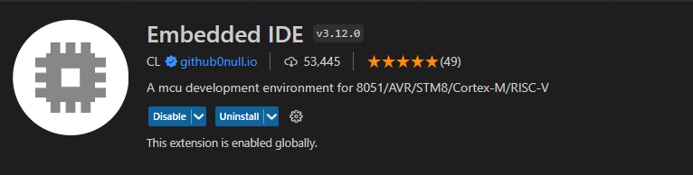</p><h3 data-lake-id="A3Vcw" data-lake-index-type="2" id="A3Vcw"><span data-lake-id="ucb2fdf9d" id="ucb2fdf9d">安装Cortex-debug</span></h3><p data-lake-id="uef9d9428" id="uef9d9428">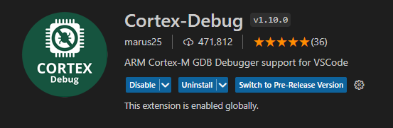</p><h2 data-lake-id="zaI2a" data-lake-index-type="2" id="zaI2a"><span data-lake-id="u3e4e7266" id="u3e4e7266">工程初始化</span></h2><h3 data-lake-id="PSds7" data-lake-index-type="2" id="PSds7"><span data-lake-id="uad0832ba" id="uad0832ba">导入现有工程（推荐）</span></h3><p data-lake-id="ue61fa531" id="ue61fa531">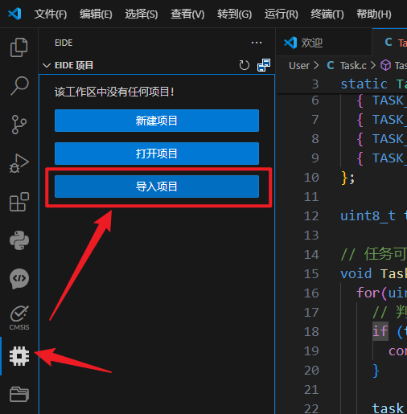</p><h3 data-lake-id="poZXs" data-lake-index-type="2" id="poZXs"><span data-lake-id="ud169f04a" id="ud169f04a">或可创建新的工程</span></h3><p data-lake-id="ucfab8983" id="ucfab8983">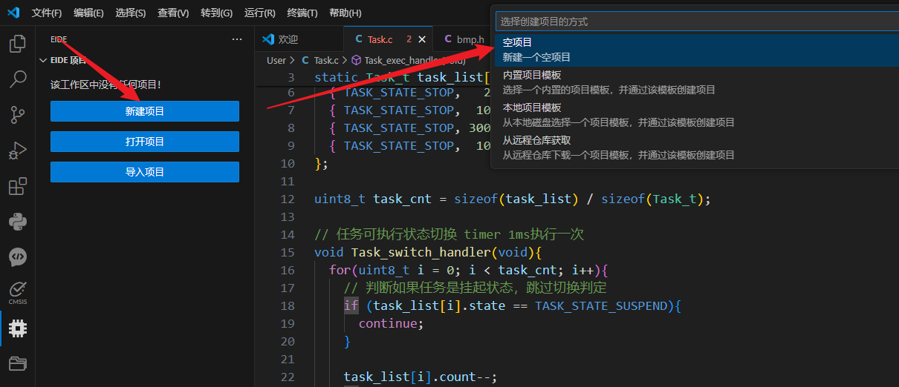</p><h4 data-lake-id="LOtmK" data-lake-index-type="2" id="LOtmK"><span data-lake-id="uda1d30fa" id="uda1d30fa">选择Cortex-M项目</span></h4><p data-lake-id="u2661ca55" id="u2661ca55">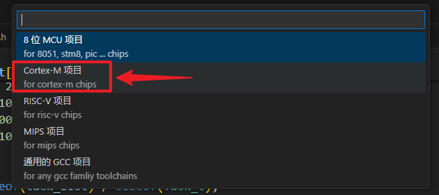</p><p data-lake-id="u7db5fcdd" id="u7db5fcdd"><span data-lake-id="u198803b9" id="u198803b9">指定项目名称，并制定存放路径即可</span></p><h4 data-lake-id="HOx3L" data-lake-index-type="2" id="HOx3L"><span data-lake-id="u9b1c0da5" id="u9b1c0da5">创建3个虚拟目录</span></h4><p data-lake-id="ua7174df3" id="ua7174df3"><span data-lake-id="ud1b503ce" id="ud1b503ce">分别是App,CMSIS,Firmware, 并将响应的文件导入到目录中</span></p><p data-lake-id="u26a063f6" id="u26a063f6">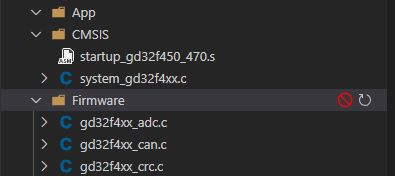</p><h4 data-lake-id="CPQwW" data-lake-index-type="2" id="CPQwW"><span data-lake-id="u213f5cea" id="u213f5cea">创建3个普通文件夹</span></h4><p data-lake-id="ub2c28737" id="ub2c28737"><span data-lake-id="u644591ce" id="u644591ce">分别为Doc,Hardware,User，并将相应的文件导入到目录中</span></p><p data-lake-id="uc67509b2" id="uc67509b2"><span data-lake-id="uae41d98e" id="uae41d98e">例如：User中存放的目录</span></p><p data-lake-id="u214958a1" id="u214958a1">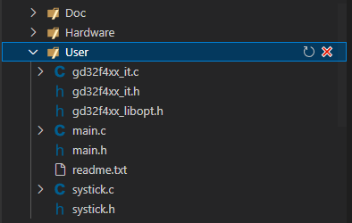</p><h3 data-lake-id="TmVa7" data-lake-index-type="2" id="TmVa7"><span data-lake-id="u3e5ded2f" id="u3e5ded2f">配置工具链</span></h3><p data-lake-id="u48e14d7c" id="u48e14d7c">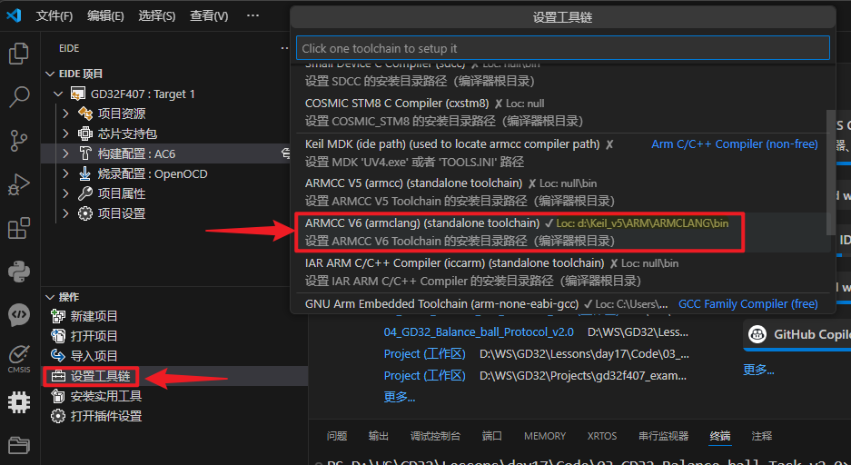</p><p data-lake-id="ub0a5d8b7" id="ub0a5d8b7"><span data-lake-id="u0fee5593" id="u0fee5593">选择Keil_v5的</span><code data-lake-id="u6d309d81" id="u6d309d81"><span data-lake-id="u3a312147" id="u3a312147">ARM/ARMCLANG</span></code><span data-lake-id="ua676b2f8" id="ua676b2f8">目录，如下图：</span></p><p data-lake-id="u50e98e86" id="u50e98e86">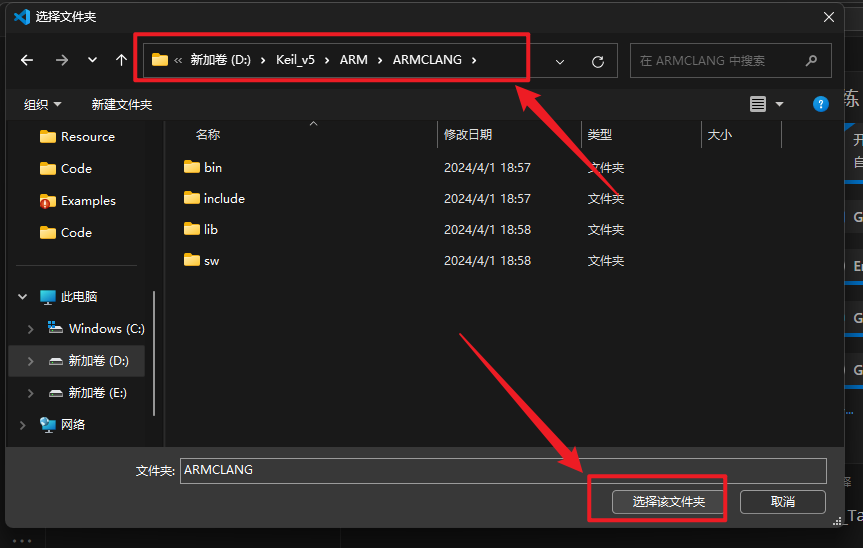</p><h3 data-lake-id="kGOeS" data-lake-index-type="2" id="kGOeS"><span data-lake-id="u32bea05b" id="u32bea05b">打开插件配置</span></h3><p data-lake-id="u8a3dfb9a" id="u8a3dfb9a"><span data-comment-id="41376723" data-lake-id="uc9461fe0" id="uc9461fe0">勾选 </span><code data-lake-id="uf7902762" id="uf7902762"><span data-comment-id="41376723" data-lake-id="uc5593716" id="uc5593716">Axf To Elf</span></code></p><p data-lake-id="u0e0c167a" id="u0e0c167a">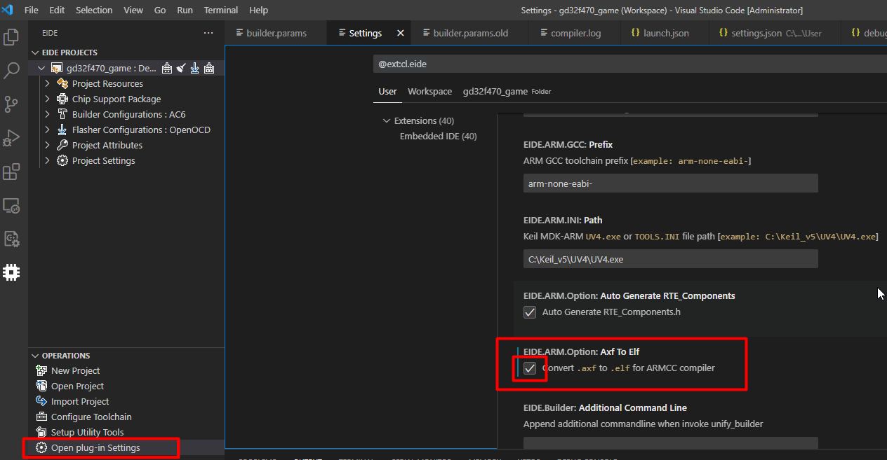</p><h3 data-lake-id="uJiev" data-lake-index-type="2" id="uJiev"><span data-lake-id="ue193ea8a" id="ue193ea8a">添加芯片支持包</span></h3><p data-lake-id="ub1345811" id="ub1345811"><span data-lake-id="u425bc80c" id="u425bc80c">添加的文件名称在gd32官网可以下载到</span><strong><span data-lake-id="u7964b41e" id="u7964b41e">GigaDevice.GD32F4xx_DFP.3.2.0.pack</span></strong></p><p data-lake-id="ub83097ca" id="ub83097ca">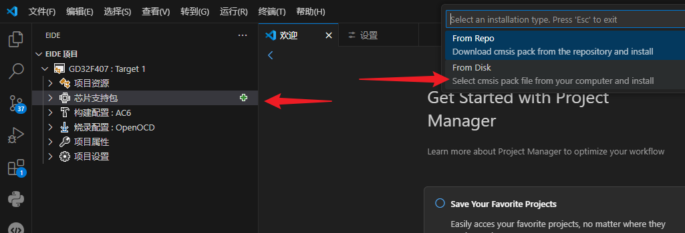</p><p data-lake-id="u167cb82f" id="u167cb82f"><span data-lake-id="ua6520ab2" id="ua6520ab2">找到本地的.pack文件（可以用everything全局搜索下）</span></p><p data-lake-id="u5fe8a655" id="u5fe8a655">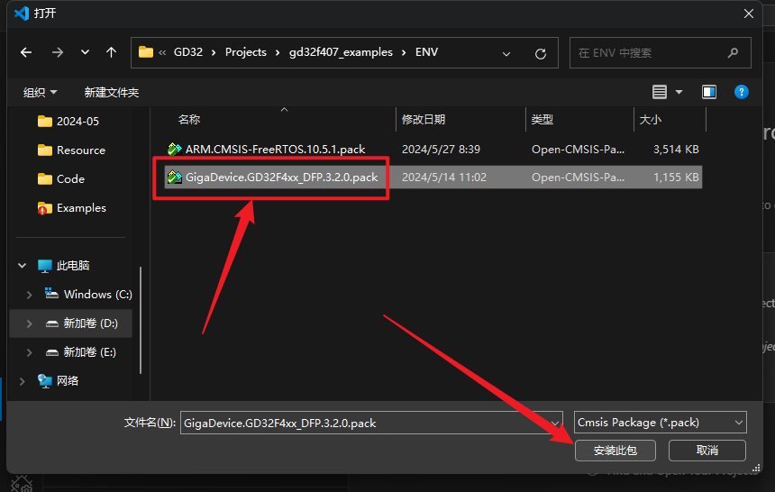</p><p data-lake-id="u19b25ae2" id="u19b25ae2"><span data-lake-id="u4b514f50" id="u4b514f50">选择芯片型号：</span></p><p data-lake-id="u2bb49775" id="u2bb49775">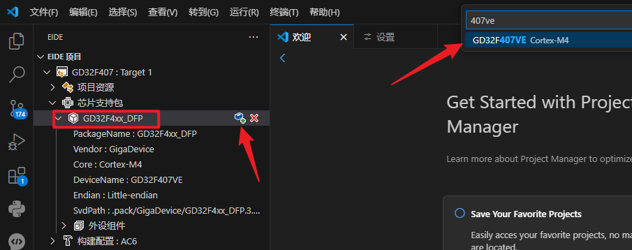</p><p data-lake-id="uaf60c198" id="uaf60c198"><br/></p><h3 data-lake-id="CTOGS" data-lake-index-type="2" id="CTOGS"><span data-lake-id="uf239cc1b" id="uf239cc1b">指定编译器到AC6</span></h3><p data-lake-id="u27d5cb7d" id="u27d5cb7d">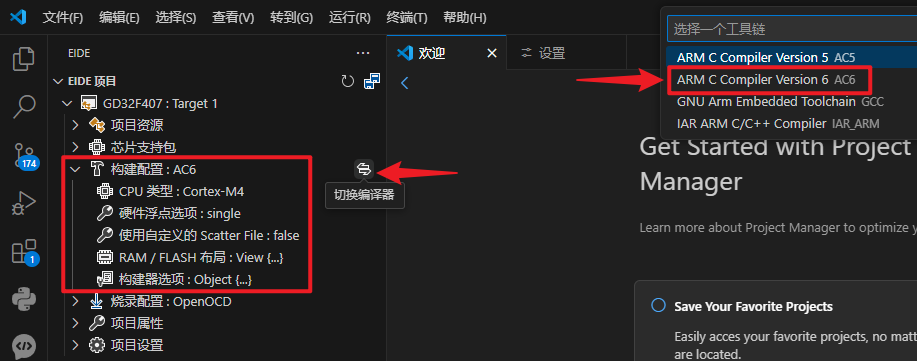</p><p data-lake-id="u48a9bfaa" id="u48a9bfaa"><br/></p><h3 data-lake-id="IYfXE" data-lake-index-type="2" id="IYfXE"><span data-lake-id="u6f009daf" id="u6f009daf">烧录配置</span></h3><p data-lake-id="u04f4e786" id="u04f4e786">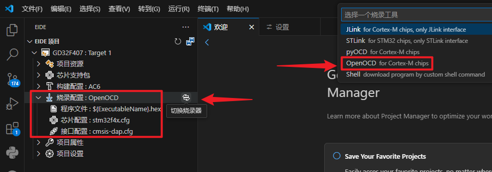</p><ul list="u843bc16a"><li data-lake-id="ufaf7f408" fid="u23363b47" id="ufaf7f408"><span data-lake-id="u1517fd65" id="u1517fd65">烧录配置：OpenOCD</span></li><li data-lake-id="u49cb3384" fid="u23363b47" id="u49cb3384"><span data-comment-id="46076029" data-lake-id="u781fa059" id="u781fa059">芯片配置：stm32f4.cfg</span></li><li data-lake-id="u29e33e8d" fid="u23363b47" id="u29e33e8d"><span data-lake-id="u938730c3" id="u938730c3">接口配置：cmsis-dap.cfg</span></li></ul><p data-lake-id="uc376b3a7" id="uc376b3a7"><span data-lake-id="ue7e2acb6" id="ue7e2acb6">如果这里搜不到stm32f4和cmsis-dap，可以重启VSCode, 或者将如下压缩包</span></p><p data-lake-id="u772c851b" id="u772c851b"><a class="yuque-card-link" href="../../_assets/463db0419a8521d68a49f467.7z">openocd_7a1adfbec_mingw32.7z</a></p><p data-lake-id="u2e9657e1" id="u2e9657e1"><span data-comment-id="46075940" data-lake-id="ub8a06979" id="ub8a06979">解压到用户目录的此文件夹： </span></p><p data-lake-id="u4a51dfd1" id="u4a51dfd1"><code data-lake-id="u1024eeca" id="u1024eeca"><span data-lake-id="ub1ebe4e4" id="ub1ebe4e4">%USERPROFILE%\.eide\tools</span></code></p><p data-lake-id="ua3b73e87" id="ua3b73e87"><code data-lake-id="u32fc2d41" id="u32fc2d41"><span data-lake-id="u7cbbe3f5" id="u7cbbe3f5">C:\Users\poplar\.eide\tools</span></code><span data-lake-id="ua1842965" id="ua1842965">  这个是我的实际路径</span></p><p data-lake-id="u841f3502" id="u841f3502"><span data-lake-id="ub054ab69" id="ub054ab69">openocd及后边的文件夹名字不能乱改，解压后效果如下（poplar是我的用户名）：</span></p><p data-lake-id="u05be3e32" id="u05be3e32">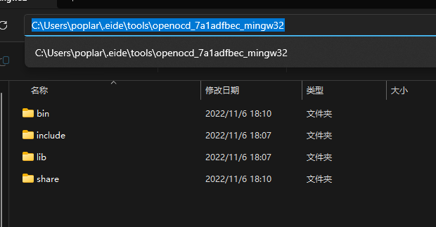</p><h3 data-lake-id="AIqHp" data-lake-index-type="2" id="AIqHp"><span data-lake-id="u2fb8fcda" id="u2fb8fcda">配置项目头文件</span></h3><p data-lake-id="u3549488b" id="u3549488b"><span data-lake-id="uc8d769a4" id="uc8d769a4">这里我们需要将用到头文件目录都包含进来</span></p><p data-lake-id="uf666689b" id="uf666689b">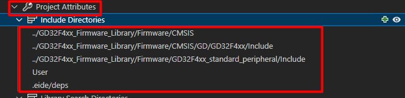</p><h2 data-lake-id="aWdjK" data-lake-index-type="2" id="aWdjK"><span data-lake-id="u6c341fd9" id="u6c341fd9">项目构建</span></h2><p data-lake-id="u7baa129d" id="u7baa129d">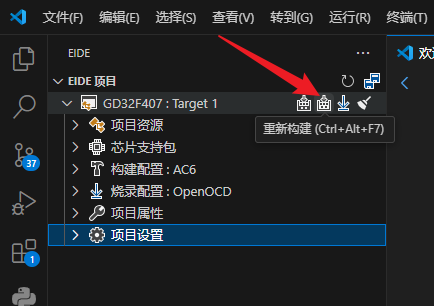</p><p data-lake-id="u1e6666fd" id="u1e6666fd"><span data-lake-id="u7133c82b" id="u7133c82b">终端输出</span><code data-lake-id="u1995c9ee" id="u1995c9ee"><span data-lake-id="ud3d3cf73" id="ud3d3cf73">[ DONE ] build successfully !</span></code><span data-lake-id="ud3f8b4f6" id="ud3f8b4f6">表示成功：</span></p><p data-lake-id="ua1a960d2" id="ua1a960d2">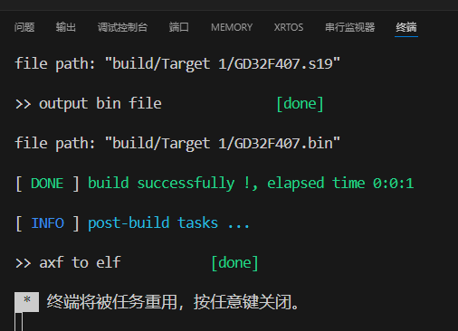</p><h2 data-lake-id="ZAudF" data-lake-index-type="2" id="ZAudF"><span data-lake-id="u558ad42d" id="u558ad42d">项目烧录</span></h2><p data-lake-id="uc277431a" id="uc277431a">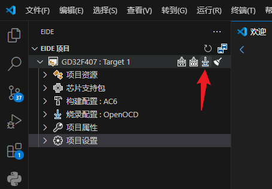</p><p data-lake-id="uf8ba7598" id="uf8ba7598"><span data-lake-id="u0c68a102" id="u0c68a102">终端输出如下内容，烧录成功：</span></p><p data-lake-id="ua26e1233" id="ua26e1233">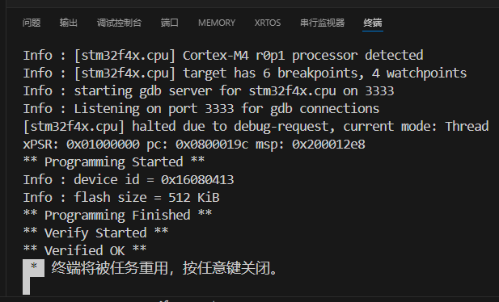</p><p data-lake-id="u47a6cd75" id="u47a6cd75"><br/></p><h3 data-lake-id="VGeBH" data-lake-index-type="2" id="VGeBH"><span data-lake-id="u5c51e6f8" id="u5c51e6f8">异常处理</span></h3><p data-lake-id="u474a0472" id="u474a0472"><span data-lake-id="udab30934" id="udab30934">如果编译通过，但是烧录报如下错误，说明没有生成.hex或.bin固件：</span></p><p data-lake-id="ud09e96f8" id="ud09e96f8">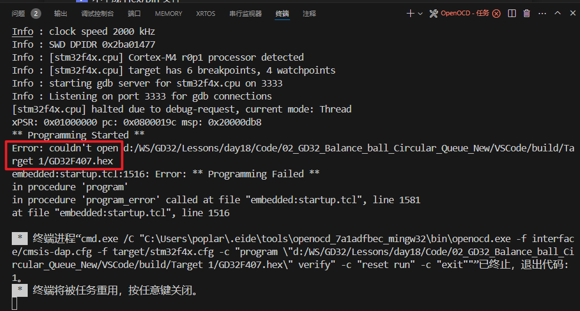</p><p data-lake-id="ud059e88b" id="ud059e88b"><span data-lake-id="uecaba7ff" id="uecaba7ff">​</span><br/></p><p data-lake-id="u406dbbed" id="u406dbbed"><span data-lake-id="ua6160d92" id="ua6160d92">可以按照如下配置，去掉一个对勾，重新编译后，再进行烧录：</span></p><p data-lake-id="u18cfeb69" id="u18cfeb69">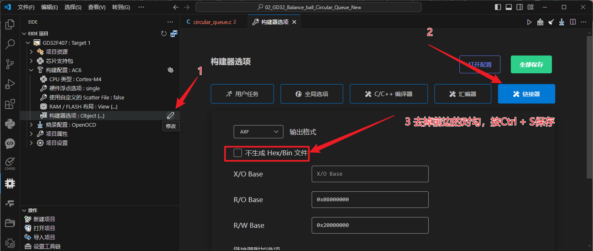</p><p data-lake-id="ucf0672a0" id="ucf0672a0"><span data-lake-id="u9efe4290" id="u9efe4290">修改完一定要保存成功，保存成功会有提示：</span></p><p data-lake-id="u0773e68c" id="u0773e68c">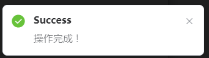</p>